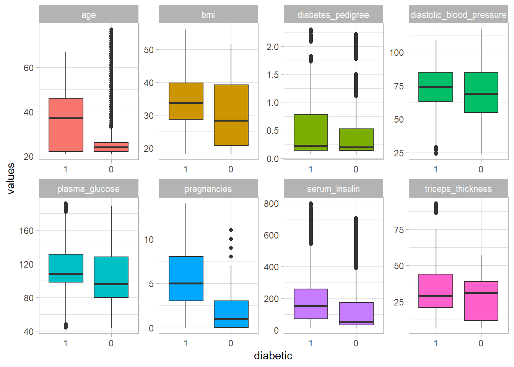

Machine learning with tidymodels: Binary Classification Model
![]()
A gentle introduction
In this post, we’ll learn how to create Machine learning models using R. Machine learning is the foundation for predictive modeling and artificial intelligence. We’ll learn the core principles of machine learning and how to use common tools and frameworks to train, evaluate, and use machine learning models.
Modules that will be covered in this learning path include:
- Explore and analyze data with R
- Train and evaluate regression models
- Train and evaluate classification models
- Train and evaluate clustering models (under development)
- Train and evaluate deep learning models (under development)
We need some packages to accomplish the step in this post. We can have them installed as:
Then we load the packages in the session
Binary classification
Let’s start by looking at an example of binary classification, where the model must predict a label that belongs to one of two classes. In this exercise, we’ll train a binary classifier to predict whether or not a patient should be tested for diabetes based on some medical data.
Explore the data
The first step in any machine learning project is to explore the data that you will use to train a model. And before we can explore the data, we must first import the dataset in our R environment. So, let’s begin by importing a CSV file of patent data into a tibble direct from the internet with read_csv function of readr package (Wickham, Hester, & Francois, 2017), part of the tidyverse ecosystem (Wickham & Wickham, 2017);
We then print the dataset to explore the variables and records contained in the dataset;
# A tibble: 15,000 x 10
PatientID Pregn~1 Plasm~2 Diast~3 Trice~4 Serum~5 BMI Diabe~6 Age Diabe~7
<dbl> <dbl> <dbl> <dbl> <dbl> <dbl> <dbl> <dbl> <dbl> <dbl>
1 1354778 0 171 80 34 23 43.5 1.21 21 0
2 1147438 8 92 93 47 36 21.2 0.158 23 0
3 1640031 7 115 47 52 35 41.5 0.0790 23 0
4 1883350 9 103 78 25 304 29.6 1.28 43 1
5 1424119 1 85 59 27 35 42.6 0.550 22 0
6 1619297 0 82 92 9 253 19.7 0.103 26 0
7 1660149 0 133 47 19 227 21.9 0.174 21 0
8 1458769 0 67 87 43 36 18.3 0.236 26 0
9 1201647 8 80 95 33 24 26.6 0.444 53 1
10 1403912 1 72 31 40 42 36.9 0.104 26 0
# ... with 14,990 more rows, and abbreviated variable names 1: Pregnancies,
# 2: PlasmaGlucose, 3: DiastolicBloodPressure, 4: TricepsThickness,
# 5: SerumInsulin, 6: DiabetesPedigree, 7: DiabeticThough the printed output tell us that there are fifteen thousand records and ten variable, but sometimes you may wish to explore the internal structure of the dataset. The glimpse function from dplyr package can do that by listing the available variables and their types;
Rows: 15,000
Columns: 10
$ PatientID <dbl> 1354778, 1147438, 1640031, 1883350, 1424119, 16~
$ Pregnancies <dbl> 0, 8, 7, 9, 1, 0, 0, 0, 8, 1, 1, 3, 5, 7, 0, 3,~
$ PlasmaGlucose <dbl> 171, 92, 115, 103, 85, 82, 133, 67, 80, 72, 88,~
$ DiastolicBloodPressure <dbl> 80, 93, 47, 78, 59, 92, 47, 87, 95, 31, 86, 96,~
$ TricepsThickness <dbl> 34, 47, 52, 25, 27, 9, 19, 43, 33, 40, 11, 31, ~
$ SerumInsulin <dbl> 23, 36, 35, 304, 35, 253, 227, 36, 24, 42, 58, ~
$ BMI <dbl> 43.50973, 21.24058, 41.51152, 29.58219, 42.6045~
$ DiabetesPedigree <dbl> 1.21319135, 0.15836498, 0.07901857, 1.28286985,~
$ Age <dbl> 21, 23, 23, 43, 22, 26, 21, 26, 53, 26, 22, 23,~
$ Diabetic <dbl> 0, 0, 0, 1, 0, 0, 0, 0, 1, 0, 0, 0, 1, 0, 0, 1,~This data consists of diagnostic information about some patients who have been tested for diabetes. Note that the final column in the dataset (Diabetic) contains the value 0 for patients who tested negative for diabetes, and 1 for patients who tested positive. This is the label that we will train our model to predict; most of the other columns (Pregnancies, PlasmaGlucose, DiastolicBloodPressure, BMI and so on) are the features we will use to predict the Diabetic label.
Let’s reformat the data to make it easier for a model to use effectively. For now, let’s drop the PatientID column, encode the Diabetic column as a categorical variable, and clean the variable names:
diabetes.tidy = diabetes %>%
janitor::clean_names() %>%
select(-patient_id) %>%
mutate(diabetic = factor(diabetic, levels = c(1,0)))
diabetes.tidy# A tibble: 15,000 x 9
pregnancies plasma_gluc~1 diast~2 trice~3 serum~4 bmi diabe~5 age diabe~6
<dbl> <dbl> <dbl> <dbl> <dbl> <dbl> <dbl> <dbl> <fct>
1 0 171 80 34 23 43.5 1.21 21 0
2 8 92 93 47 36 21.2 0.158 23 0
3 7 115 47 52 35 41.5 0.0790 23 0
4 9 103 78 25 304 29.6 1.28 43 1
5 1 85 59 27 35 42.6 0.550 22 0
6 0 82 92 9 253 19.7 0.103 26 0
7 0 133 47 19 227 21.9 0.174 21 0
8 0 67 87 43 36 18.3 0.236 26 0
9 8 80 95 33 24 26.6 0.444 53 1
10 1 72 31 40 42 36.9 0.104 26 0
# ... with 14,990 more rows, and abbreviated variable names 1: plasma_glucose,
# 2: diastolic_blood_pressure, 3: triceps_thickness, 4: serum_insulin,
# 5: diabetes_pedigree, 6: diabeticThe primary goal of this exploration is to try to understand the relationships between of the variables in the dataset. In general to assess any apparent correlation between the features and the label we want to predict. The best approach is to use mental picture through data visualization. Now let’s compare the feature distributions for each label value. We’ll begin by formatting the data to a long format to make it somewhat easier to make multiple facets.
Once we have pivoted the data to long format, we can make some plots for visual exploration
theme_set(theme_light())
diabetes.tidy.long %>%
ggplot(aes(x = diabetic, y = values, fill = features)) +
geom_boxplot() +
facet_wrap(~ features, scales = "free", ncol = 4) +
scale_color_viridis_d(option = "plasma", end = .7) +
theme(legend.position = "none")
Amazing! For some of the features, there’s a noticeable difference in the distribution for each label value. In particular, Pregnancies and Age show markedly different distributions for diabetic patients than for non-diabetic patients. These features may help predict whether or not a patient is diabetic.
Split the data
Our dataset includes known values for the label, so we can use this to train a classifier so that it finds a statistical relationship between the features and the label value; but how will we know if our model is any good? How do we know it will predict correctly when we use it with new data that it wasn’t trained with?
It is best practice to hold out part of the data for testing in order to get a better estimate of how models will perform on new data by comparing the predicted labels with the already known labels in the test set. Well, we can take advantage of the fact we have a large dataset with known label values, use only some of it to train the model, and hold back some to test the trained model - enabling us to compare the predicted labels with the already known labels in the test set.
In R, the tidymodels framework provides a collection of packages for modeling and machine learning using tidyverse principles (Kuhn & Wickham, 2020). For instance, rsample, a package in tidymodels, provides infrastructure for efficient data splitting and resampling (Kuhn, Chow, & Wickham, 2020):
initial_split(): specifies how data will be split into a training and testing settraining()andtesting()functions extract the data in each split
# Split data into 70% for training and 30% for testing
set.seed(2056)
diabetes_split <- diabetes.tidy %>%
initial_split(prop = 0.70)
# Extract the data in each split
diabetes_train <- training(diabetes_split)
diabetes_test <- testing(diabetes_split)
# Print the number of cases in each split
cat("Training cases: ", nrow(diabetes_train), "\n",
"Test cases: ", nrow(diabetes_test), sep = "")Training cases: 10500
Test cases: 4500Train and Evaluate a Binary Classification Model
Once we have separated the dataset into train and test set, now we’re ready to train our model by fitting the training features to the training labels (diabetic). There are various algorithms we can use to train the model. In this example, we’ll use Logistic Regression, which is a well-established algorithm for classification. Logistic regression is a binary classification algorithm, meaning it predicts two categories.
There are quite a number of ways to fit a logistic regression model in tidymodels. For now, let’s fit a logistic regression model via the default stats::glm() engine.
# Make a model specifcation
logreg_spec <- logistic_reg() %>%
set_engine("glm") %>%
set_mode("classification")
# Print the model specification
logreg_specLogistic Regression Model Specification (classification)
Computational engine: glm After a model has been specified, the model can be estimated or trained using the fit() function, typically using a symbolic description of the model (a formula) and some data.
# Train a logistic regression model
logreg_fit <- logreg_spec %>%
fit(diabetic ~ ., data = diabetes_train)
# Print the model object
logreg_fitparsnip model object
Call: stats::glm(formula = diabetic ~ ., family = stats::binomial,
data = data)
Coefficients:
(Intercept) pregnancies plasma_glucose
8.624243 -0.266296 -0.009615
diastolic_blood_pressure triceps_thickness serum_insulin
-0.012297 -0.022807 -0.003932
bmi diabetes_pedigree age
-0.049028 -0.923262 -0.056876
Degrees of Freedom: 10499 Total (i.e. Null); 10491 Residual
Null Deviance: 13290
Residual Deviance: 9221 AIC: 9239The model print out shows the coefficients learned during training.
Now we’ve trained the model using the training data, we can use the test data we held back to evaluate how well it predicts using parsnip::predict(). Let’s start by using the model to predict labels for our test set, and compare the predicted labels to the known labels:
# Make predictions then bind them to the test set
results <- diabetes_test %>%
select(diabetic) %>%
bind_cols(
logreg_fit %>% predict(new_data = diabetes_test)
)
# Compare predictions
results %>%
slice_head(n = 10)# A tibble: 10 x 2
diabetic .pred_class
<fct> <fct>
1 0 0
2 0 0
3 0 0
4 0 0
5 1 1
6 0 0
7 0 0
8 1 0
9 0 0
10 0 0 Comparing each prediction with its corresponding “ground truth” actual value isn’t a very efficient way to determine how well the model is predicting. Fortunately, Tidymodels has a few more tricks up its sleeve: yardstick - a package used to measure the effectiveness of models using performance metrics (Kuhn & Vaughan, 2020).
The most obvious thing you might want to do is to check the accuracy of the predictions - in simple terms, what proportion of the labels did the model predict correctly? yardstick::accuracy() does just that!
# Calculate accuracy: proportion of data predicted correctly
accuracy(
data = results,
truth = diabetic,
estimate = .pred_class
)# A tibble: 1 x 3
.metric .estimator .estimate
<chr> <chr> <dbl>
1 accuracy binary 0.789The accuracy is returned as a decimal value - a value of 1.0 would mean that the model got 100% of the predictions right; while an accuracy of 0.0 is, well, pretty useless! Accuracy seems like a sensible metric to evaluate (and to a certain extent it is), but you need to be careful about drawing too many conclusions from the accuracy of a classifier. Remember that it’s simply a measure of how many cases were predicted correctly. Suppose only 3% of the population is diabetic. You could create a classifier that always just predicts 0, and it would be 97% accurate - but not terribly helpful in identifying patients with diabetes!
Fortunately, there are some other metrics that reveal a little more about how our classification model is performing.One performance metric associated with classification problems is the confusion matrix. A confusion matrix describes how well a classification model performs by tabulating how many examples in each class were correctly classified by a model. In our case, it will show you how many cases were classified as negative (0) and how many as positive (1); the confusion matrix also shows you how many were classified into the wrong categories. The conf_mat() function from yardstick calculates this cross-tabulation of observed and predicted classes.
# Confusion matrix for prediction results
conf_mat(data = results, truth = diabetic, estimate = .pred_class) Truth
Prediction 1 0
1 897 293
0 657 2653tidymodels provides yet another succinct way of evaluating all these metrics. Using yardstick::metric_set(), you can combine multiple metrics together into a new function that calculates all of them at once.
# Combine metrics and evaluate them all at once
eval_metrics <-
metric_set(ppv, recall, accuracy, f_meas)
eval_metrics(
data = results,
truth = diabetic,
estimate = .pred_class
)# A tibble: 4 x 3
.metric .estimator .estimate
<chr> <chr> <dbl>
1 ppv binary 0.754
2 recall binary 0.577
3 accuracy binary 0.789
4 f_meas binary 0.654Until now, we’ve considered the predictions from the model as being either 1 or 0 class labels. Actually, things are a little more complex than that. Statistical machine learning algorithms, like logistic regression, are based on probability; so what actually gets predicted by a binary classifier is the probability that the label is true (P(y) ) and the probability that the label is false (1−P(y) ). A threshold value of 0.5 is used to decide whether the predicted label is a 1 (P(y)>0.5 ) or a 0 (P(y)<=0.5 ). Let’s see the probability pairs for each case:
# Predict class probabilities and bind them to results
results <- results %>%
bind_cols(logreg_fit %>%
predict(new_data = diabetes_test, type = "prob"))
# Print out the results
results %>%
slice_head(n = 10)# A tibble: 10 x 4
diabetic .pred_class .pred_1 .pred_0
<fct> <fct> <dbl> <dbl>
1 0 0 0.417 0.583
2 0 0 0.0985 0.902
3 0 0 0.0469 0.953
4 0 0 0.0561 0.944
5 1 1 0.581 0.419
6 0 0 0.331 0.669
7 0 0 0.288 0.712
8 1 0 0.270 0.730
9 0 0 0.275 0.725
10 0 0 0.131 0.869The decision to score a prediction as a 1 or a 0 depends on the threshold to which the predicted probabilities are compared. If we were to change the threshold, it would affect the predictions; and therefore change the metrics in the confusion matrix. A common way to evaluate a classifier is to examine the true positive rate (which is another name for recall) and the false positive rate (1 - specificity) for a range of possible thresholds. These rates are then plotted against all possible thresholds to form a chart known as a received operator characteristic (ROC) chart, like this:
The ROC chart shows the curve of the true and false positive rates for different threshold values between 0 and 1. A perfect classifier would have a curve that goes straight up the left side and straight across the top. The diagonal line across the chart represents the probability of predicting correctly with a 50/50 random prediction; so you obviously want the curve to be higher than that (or your model is no better than simply guessing!).
The area under the curve (AUC) is a value between 0 and 1 that quantifies the overall performance of the model. One way of interpreting AUC is as the probability that the model ranks a random positive example more highly than a random negative example. The closer to 1 this value is, the better the model. Once again, Tidymodels includes a function to calculate this metric: yardstick::roc_auc()